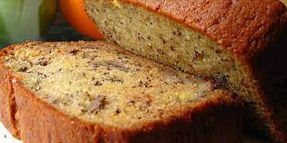

Banana Bread

Description
Banana bread is a type of bread made from mashed bananas.
It is often a moist, sweet, cake-like quick bread;
Ingredients
- Riped Bananas
- Eggs
- Sugar
- All purpose flour
Steps
- Preheat oven to 350 degrees F (175 degrees C). Grease a 9x5 inch loaf pan.
- In a large bowl, stir together the melted butter and sugar. Add the eggs and vanilla, mix well. Combine the flour, baking soda and salt, stir into the butter mixture until smooth. Finally, fold in the sour cream, walnuts and bananas. Spread evenly into the prepared pan.
- Bake at 350 degrees F (175 degrees C) for 60 minutes, or until a toothpick inserted into the center of the loaf comes out clean. Cool loaf in the pan for 10 minutes before removing to a wire rack to cool completely.
GoToMainMenu